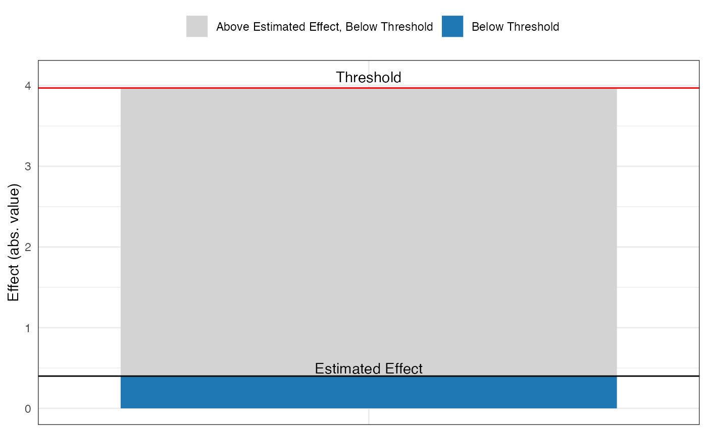
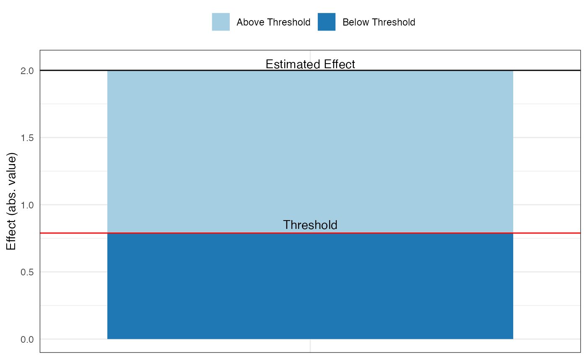

Introduction to konfound
Joshua Rosenberg, Ran Xu, and Ken Frank
2020-02-26
Source:vignettes/introduction-to-konfound.Rmd
introduction-to-konfound.RmdTable of contents
- Introduction (1 page)
- Background on sensitivity analysis
- Impact threshold of a confounding variable (1 page)
- Percent bias to invalidate an inference (1 page)
- Example
- pkonfound for already-published studies (1)
- konfound for models fitted in R (3 pages)
- mkonfound for meta-analyses that involve sensitivity analysis (2 pages)
Introduction
In social science (and educational) research, we often wish to understand how robust inferences about effects are to unobserved (or controlled for) covariates, possible problems with measurement, and other sources of bias. The goal of konfound is to carry out sensitivity analysis to help analysts to quantify how robust inferences are to potential sources of bias. This package provides functions based on developments in sensitivity analysis by Frank and colleagues, which previously have been implemented in Stata and through an Excel spreadsheet, in R through the konfound package. In particular, we provide functions for both values from analyses carried out outside of R as well as from models (lm(), glm(), and lme4::lmer() fit in R) for:
- Quantifying the bias necessary to alter an inference from the framework of Rubin’s (1974) causal model
- The robustness of causal inference in terms of the impact threshold of a confounding variable
You can install konfound with the following:
You can then load konfound with the library() function:
library(konfound)
#> Sensitivity analysis as described in Frank, Maroulis, Duong, and Kelcey (2013) and in Frank (2000).
#> For more information visit http://konfound-it.com.Use of pkonfound() for values from an already-conducted analysis
pkonfound() is used when we have values from an already-conducted analysis (like a regression analysis), such as one in an already-published study or from an analysis carried out using other software.
In the case of a regression analysis, values from the analysis would simply be used as the inputs to the pkonfound() function. For example, in the use below, we simply enter the values for the estimated effect (an unstandardardized beta coefficient) (2), its standard error (.4), the sample size (100), and the number of covariates (3):
pkonfound(2, .4, 100, 3)
#> Percent Bias Necessary to Invalidate the Inference:
#> To invalidate an inference, 60.3% of the estimate would have to be due to bias. This is based on a threshold of 0.794 for statistical significance (alpha = 0.05).
#> To invalidate an inference, 60 observations would have to be replaced with cases for which the effect is 0.
#> See Frank et al. (2013) for a description of the method
#> Citation: Frank, K.A., Maroulis, S., Duong, M., and Kelcey, B. 2013. What would it take to change an inference? Using Rubin's causal model to interpret the robustness of causal inferences. Education, Evaluation and Policy Analysis, 35 437-460.
#> Impact Threshold for a Confounding Variable:
#> The minimum impact to invalidate an inference for a null hypothesis of 0 effect is based on a correlation of 0.568 with the outcome and at 0.568 with the predictor of interest (conditioning on observed covariates) based on a threshold of 0.201 for statistical significance (alpha = 0.05).
#> Correspondingly the impact of an omitted variable (as defined in Frank 2000) must be 0.568 X 0.568 = 0.323 to invalidate an inference for a null hypothesis of 0 effect.
#> See Frank (2000) for a description of the method
#> Citation: Frank, K. 2000. Impact of a confounding variable on the inference of a regression coefficient. Sociological Methods and Research, 29 (2), 147-194
#> For other forms of output, change `to_return` to table, raw_output, thres_plot, or corr_plot.
#> For models fit in R, consider use of konfound().For this set of values, around 60% would need to be false due to a source of bias for the inference to be invalidated (based on statistical significance and a p-value (or alpha) of .05), possible a very robust effect. An omitted, confounding variable (sometimes referred to as a covariate) would need to have an impact (defined as the product of the confounding variable’s correlation with both the predictor of interest and the outcome) of 0.323, presenting a different interpretation of how robust this (hypothetical) effect is to a variable which is important but not included in the analysis.
Here is another example, but one in which the unstandardized beta coefficient is smaller than its standard error:
pkonfound(.4, 2, 100, 3)
#> Percent Bias Necessary to Invalidate the Inference:
#> To sustain an inference, 89.924% of the estimate would have to be due to bias. This is based on a threshold of 3.97 for statistical significance (alpha = 0.05).
#> To sustain an inference, 90 of the cases with 0 effect would have to be replaced with cases at the threshold of inference.
#> See Frank et al. (2013) for a description of the method
#> Citation: Frank, K.A., Maroulis, S., Duong, M., and Kelcey, B. 2013. What would it take to change an inference? Using Rubin's causal model to interpret the robustness of causal inferences. Education, Evaluation and Policy Analysis, 35 437-460.
#> Impact Threshold for a Confounding Variable:
#> The maximum impact to sustain an inference for a null hypothesis of 0 effect is based on a correlation of 0.387 with the outcome and at 0.387 with the predictor of interest (conditioning on observed covariates) based on a threshold of 3.97 for statistical significance (alpha = 0.05).
#> Correspondingly the impact of an omitted variable (as defined in Frank 2000) must be 0.387 X 0.387 = 0.15 to sustain an inference for a null hypothesis of 0 effect.
#> See Frank (2000) for a description of the method
#> Citation: Frank, K. 2000. Impact of a confounding variable on the inference of a regression coefficient. Sociological Methods and Research, 29 (2), 147-194
#> For other forms of output, change `to_return` to table, raw_output, thres_plot, or corr_plot.
#> For models fit in R, consider use of konfound().Note that this use of pkonfound() is equivalent to naming the arguments, i.e. for a different set of values:
pkonfound(est_eff = -2.2,
std_err = .65,
n_obs = 200,
n_covariates = 3)
#> Percent Bias Necessary to Invalidate the Inference:
#> To invalidate an inference, 41.732% of the estimate would have to be due to bias. This is based on a threshold of -1.282 for statistical significance (alpha = 0.05).
#> To invalidate an inference, 83 observations would have to be replaced with cases for which the effect is 0.
#> See Frank et al. (2013) for a description of the method
#> Citation: Frank, K.A., Maroulis, S., Duong, M., and Kelcey, B. 2013. What would it take to change an inference? Using Rubin's causal model to interpret the robustness of causal inferences. Education, Evaluation and Policy Analysis, 35 437-460.
#> Impact Threshold for a Confounding Variable:
#> The minimum impact to invalidate an inference for a null hypothesis of 0 effect is based on a correlation of 0.334 with the outcome and at 0.334 with the predictor of interest (conditioning on observed covariates) based on a threshold of -0.14 for statistical significance (alpha = 0.05).
#> Correspondingly the impact of an omitted variable (as defined in Frank 2000) must be 0.334 X 0.334 = 0.112 to invalidate an inference for a null hypothesis of 0 effect.
#> See Frank (2000) for a description of the method
#> Citation: Frank, K. 2000. Impact of a confounding variable on the inference of a regression coefficient. Sociological Methods and Research, 29 (2), 147-194
#> For other forms of output, change `to_return` to table, raw_output, thres_plot, or corr_plot.
#> For models fit in R, consider use of konfound().We notice that the output includes a message that says we can view other forms of output by changing the to_return argument. Here are the two plots - for the bias necessary to alter an inference (thresh_plot) and for the robustness of an inference in terms of the impact of a confounding variable (corr_plot) that can be returned:

You can also specify multiple forms of output at once.
model_output <- pkonfound(2, .4, 200, 3, to_return = c("raw_output", "thresh_plot", "corr_plot"))
#> Percent Bias Necessary to Invalidate the Inference:
#> To invalidate an inference, 60.557% of the estimate would have to be due to bias. This is based on a threshold of 0.789 for statistical significance (alpha = 0.05).
#> To invalidate an inference, 121 observations would have to be replaced with cases for which the effect is 0.
#> See Frank et al. (2013) for a description of the method
#> Citation: Frank, K.A., Maroulis, S., Duong, M., and Kelcey, B. 2013. What would it take to change an inference? Using Rubin's causal model to interpret the robustness of causal inferences. Education, Evaluation and Policy Analysis, 35 437-460.
#> Impact Threshold for a Confounding Variable:
#> The minimum impact to invalidate an inference for a null hypothesis of 0 effect is based on a correlation of 0.479 with the outcome and at 0.479 with the predictor of interest (conditioning on observed covariates) based on a threshold of 0.14 for statistical significance (alpha = 0.05).
#> Correspondingly the impact of an omitted variable (as defined in Frank 2000) must be 0.479 X 0.479 = 0.229 to invalidate an inference for a null hypothesis of 0 effect.
#> See Frank (2000) for a description of the method
#> Citation: Frank, K. 2000. Impact of a confounding variable on the inference of a regression coefficient. Sociological Methods and Research, 29 (2), 147-194
#> Print output created by default. Created 3 other forms of output. Use list indexing or run summary() on the output to see how to access.
summary(model_output)
#> Created 3 forms of output. To access type:
#>
#> model_output$raw_output
#> model_output$thresh_plot
#> model_output$corr_plotWhen we type the name of the object, we see that we created three types of output that we can access as follows:
model_output$raw_output
#> # A tibble: 1 x 8
#> action inference percent_bias_to… replace_null_ca… unstd_beta beta_threshhold
#> <chr> <chr> <dbl> <dbl> <dbl> <dbl>
#> 1 to_in… reject_n… 60.6 121 2 0.789
#> # … with 2 more variables: omitted_variable_corr <dbl>, itcv <dbl>
model_output$thresh_plot

Finally, you can return the raw output, for use in other analyses.
pkonfound(.4, 2, 100, 3, to_return = "raw_output")
#> # A tibble: 1 x 8
#> action inference percent_bias_to… replace_null_ca… unstd_beta beta_threshhold
#> <chr> <chr> <dbl> <dbl> <dbl> <dbl>
#> 1 to_su… fail_to_… 89.9 90 0.4 3.97
#> # … with 2 more variables: omitted_variable_corr <dbl>, itcv <dbl>Use of konfound() for models fit in R
Where pkonfound() can be used with values from already-conducted analyses, konfound() can be used with models (lm(), glm(), and lme4::lmer()) fit in R.
For linear models fit with lm()
m1 <- lm(mpg ~ wt + hp + qsec, data = mtcars)
m1
#>
#> Call:
#> lm(formula = mpg ~ wt + hp + qsec, data = mtcars)
#>
#> Coefficients:
#> (Intercept) wt hp qsec
#> 27.61053 -4.35880 -0.01782 0.51083
konfound(m1, hp)
#> Percent Bias Necessary to Invalidate the Inference:
#> To sustain an inference, 41.327% of the estimate would have to be due to bias. This is based on a threshold of -0.031 for statistical significance (alpha = 0.05).
#> To sustain an inference, 13 of the cases with 0 effect would have to be replaced with cases at the threshold of inference.
#> See Frank et al. (2013) for a description of the method
#> Citation: Frank, K.A., Maroulis, S., Duong, M., and Kelcey, B. 2013. What would it take to change an inference? Using Rubin's causal model to interpret the robustness of causal inferences. Education, Evaluation and Policy Analysis, 35 437-460.
#> Impact Threshold for a Confounding Variable:
#> The maximum impact to sustain an inference for a null hypothesis of 0 effect is based on a correlation of 0.322 with the outcome and at 0.322 with the predictor of interest (conditioning on observed covariates) based on a threshold of -0.031 for statistical significance (alpha = 0.05).
#> Correspondingly the impact of an omitted variable (as defined in Frank 2000) must be 0.322 X 0.322 = 0.104 to sustain an inference for a null hypothesis of 0 effect.
#> See Frank (2000) for a description of the method
#> Citation: Frank, K. 2000. Impact of a confounding variable on the inference of a regression coefficient. Sociological Methods and Research, 29 (2), 147-194
#> For more detailed output, consider setting `to_return` to table
#> To consider other predictors of interest, consider setting `test_all` to TRUE.Like with pkonfound(), we can also output multiple forms of output at once with konfound():
konfound_output <- konfound(m1, hp, to_return = c("raw_output", "thresh_plot", "corr_plot"))
#> Percent Bias Necessary to Invalidate the Inference:
#> To sustain an inference, 41.327% of the estimate would have to be due to bias. This is based on a threshold of -0.031 for statistical significance (alpha = 0.05).
#> To sustain an inference, 13 of the cases with 0 effect would have to be replaced with cases at the threshold of inference.
#> See Frank et al. (2013) for a description of the method
#> Citation: Frank, K.A., Maroulis, S., Duong, M., and Kelcey, B. 2013. What would it take to change an inference? Using Rubin's causal model to interpret the robustness of causal inferences. Education, Evaluation and Policy Analysis, 35 437-460.
#> Impact Threshold for a Confounding Variable:
#> The maximum impact to sustain an inference for a null hypothesis of 0 effect is based on a correlation of 0.322 with the outcome and at 0.322 with the predictor of interest (conditioning on observed covariates) based on a threshold of -0.031 for statistical significance (alpha = 0.05).
#> Correspondingly the impact of an omitted variable (as defined in Frank 2000) must be 0.322 X 0.322 = 0.104 to sustain an inference for a null hypothesis of 0 effect.
#> See Frank (2000) for a description of the method
#> Citation: Frank, K. 2000. Impact of a confounding variable on the inference of a regression coefficient. Sociological Methods and Research, 29 (2), 147-194
#> Print output created by default. Created 3 other forms of output. Use list indexing or run summary() on the output to see how to access.
summary(konfound_output)
#> Created 3 forms of output. To access type:
#>
#> konfound_output$raw_output
#> konfound_output$thresh_plot
#> konfound_output$corr_plotAgain, we can type each of those, i.e.:
konfound_output$raw_output
#> # A tibble: 1 x 8
#> action inference percent_bias_to… replace_null_ca… unstd_beta beta_threshhold
#> <chr> <chr> <dbl> <dbl> <dbl> <dbl>
#> 1 to_su… fail_to_… 41.3 13 -0.018 -0.0307
#> # … with 2 more variables: omitted_variable_corr <dbl>, itcv <dbl>
konfound_output$thresh_plot
We can also test all of the variables as predictors of interest:
konfound(m1, wt, test_all = TRUE)
#> Note that this output is calculated based on the correlation-based approach used in mkonfound()
#> # A tibble: 3 x 8
#> var_name t df action inference pct_bias_to_change_… itcv r_con
#> <chr> <dbl> <dbl> <chr> <chr> <dbl> <dbl> <dbl>
#> 1 wt -5.79 29 to_inval… reject_null 51.5 0.585 0.765
#> 2 hp -1.2 29 to_susta… fail_to_reje… 38.7 -0.102 0.319
#> 3 qsec 1.16 29 to_susta… fail_to_reje… 40.5 -0.106 0.326Whereas this cannot be carried out with pkonfound(), with konfound() you can also return a table with some key output from the correlation-based approach.
konfound(m1, wt, to_return = "table")
#> Dependent variable is mpg
#> Warning: Unknown or uninitialised column: 'itcv'.
#> Warning: Unknown or uninitialised column: 'impact'.
#> # A tibble: 4 x 7
#> term estimate std.error statistic p.value itcv impact
#> <chr> <dbl> <dbl> <dbl> <dbl> <dbl> <dbl>
#> 1 (Intercept) 27.6 8.42 3.28 0.003 NA NA
#> 2 wt -4.36 0.753 -5.79 0 0.596 NA
#> 3 hp -0.018 0.015 -1.19 0.244 NA 0.511
#> 4 qsec 0.511 0.439 1.16 0.255 NA 0.073If the impact threshhold is greater than the impacts of the Zs (the other covariates) then an omitted variable would have to have a greater impact than any of the observed covariates to change the inference. Note that in fields in which there is a lot known about covariates given the outcome of interest, then the omitted ones are likely less important than those that are known an included (i.e., we have a good sense of the factors that matter in terms of educational achievement).
For generalized linear models fit with glm()
Effects for these models are interpreted on the basis of average partial (or marginal) effects (calculated using the margins package).
# if forcats is not installed, this install it first using install.packages("forcats") for this to run
if (requireNamespace("forcats")) {
d <- forcats::gss_cat
d$married <- ifelse(d$marital == "Married", 1, 0)
m2 <- glm(married ~ age, data = d, family = binomial(link = "logit"))
konfound(m2, age)
}
#> Percent Bias Necessary to Invalidate the Inference:
#> To sustain an inference, 80.978% of the estimate would have to be due to bias. This is based on a threshold of 0.013 for statistical significance (alpha = 0.05).
#> To sustain an inference, 17334 of the cases with 0 effect would have to be replaced with cases at the threshold of inference.
#> See Frank et al. (2013) for a description of the method
#> Citation: Frank, K.A., Maroulis, S., Duong, M., and Kelcey, B. 2013. What would it take to change an inference? Using Rubin's causal model to interpret the robustness of causal inferences. Education, Evaluation and Policy Analysis, 35 437-460.
#> Impact Threshold for a Confounding Variable:
#> The minimum impact to invalidate an inference for a null hypothesis of 0 effect is based on a correlation of 5.535 with the outcome and at 5.535 with the predictor of interest (conditioning on observed covariates) based on a threshold of 1.003 for statistical significance (alpha = 0.05).
#> Correspondingly the impact of an omitted variable (as defined in Frank 2000) must be 5.535 X 5.535 = 30.636 to invalidate an inference for a null hypothesis of 0 effect.
#> See Frank (2000) for a description of the method
#> Citation: Frank, K. 2000. Impact of a confounding variable on the inference of a regression coefficient. Sociological Methods and Research, 29 (2), 147-194
#> NULLAs with models fit with lm() (and use of pkonfound()), multiple forms of output can be specified with the to_return argument to konfound(), i.e. konfound(m2, age, to_return = c("raw_output", "corr_plot", "thresh_plot")).
For mixed effects (or multi-level) models fit with the lmer() function from the lme4 package
konfound also works with models fit with the lmer() function from the package lme4, for mixed-effects or multi-level models. One challenge with carrying out sensitivity analysis for fixed effects in mixed effects models is calculating the correct denominator degrees of freedom for the t-test associated with the coefficients. This is not unique to sensitivity analysis, as, for example, lmer() does not report degrees of freedom (or p-values) for fixed effects predictors (see this information in the lme4 FAQ here). While it may be possible to determine the correct degrees of freedom for some models (i.e., models with relatively simple random effects structures), it is difficult to generalize this approach, and so in this package the Kenward-Roger approximation for the denominator degrees of freedom as implemented in the pbkrtest package (described in Halekoh and Højsgaard, 2014).
Here is an example of the use of konfound() with a model fit with lmer():
if (requireNamespace("lme4")) {
library(lme4)
m3 <- fm1 <- lmer(Reaction ~ Days + (1 | Subject), sleepstudy)
konfound(m3, Days)
}
#> Loading required namespace: lme4
#> Loading required package: Matrix
#> Warning in bind_rows_(x, .id): binding factor and character vector, coercing
#> into character vector
#> Warning in bind_rows_(x, .id): binding character and factor vector, coercing
#> into character vector
#> Percent Bias Necessary to Invalidate the Inference:
#> To invalidate an inference, 84.83% of the estimate would have to be due to bias. This is based on a threshold of 1.588 for statistical significance (alpha = 0.05).
#> To invalidate an inference, 137 observations would have to be replaced with cases for which the effect is 0.
#> See Frank et al. (2013) for a description of the method
#> Citation: Frank, K.A., Maroulis, S., Duong, M., and Kelcey, B. 2013. What would it take to change an inference? Using Rubin's causal model to interpret the robustness of causal inferences. Education, Evaluation and Policy Analysis, 35 437-460.
#> Impact Threshold for a Confounding Variable:
#> The minimum impact to invalidate an inference for a null hypothesis of 0 effect is based on a correlation of 0.817 with the outcome and at 0.817 with the predictor of interest (conditioning on observed covariates) based on a threshold of 0.155 for statistical significance (alpha = 0.05).
#> Correspondingly the impact of an omitted variable (as defined in Frank 2000) must be 0.817 X 0.817 = 0.667 to invalidate an inference for a null hypothesis of 0 effect.
#> See Frank (2000) for a description of the method
#> Citation: Frank, K. 2000. Impact of a confounding variable on the inference of a regression coefficient. Sociological Methods and Research, 29 (2), 147-194
#> Note that the Kenward-Roger approximation is used to estimate degrees of freedom for the predictor(s) of interest. We are presently working to add other methods for calculating the degrees of freedom for the predictor(s) of interest. If you wish to use other methods now, consider those detailed here: https://bbolker.github.io/mixedmodels-misc/glmmFAQ.html#why-doesnt-lme4-display-denominator-degrees-of-freedomp-values-what-other-options-do-i-have. You can then enter degrees of freedom obtained from another method along with the coefficient, number of observations, and number of covariates to the pkonfound() function to quantify the robustness of the inference.
#> NULLUse of mkonfound() for meta-analyses that include sensitivity analysis
We can also use konfound to carry out sensitivity analysis as part of meta-analyses. For example, here, d represents output from a number (30 in this case) of past studies, read in a CSV file from a website:
d <- read.csv("https://msu.edu/~kenfrank/example%20dataset%20for%20mkonfound.csv")
head(d)
#> t df
#> 1 7.076763 178
#> 2 4.127893 193
#> 3 1.893137 47
#> 4 -4.166395 138
#> 5 -1.187599 97
#> 6 3.585478 87
mkonfound(d, t, df)
#> # A tibble: 30 x 7
#> t df action inference pct_bias_to_change_inf… itcv r_con
#> <dbl> <int> <chr> <chr> <dbl> <dbl> <dbl>
#> 1 7.08 178 to_invalid… reject_null 68.8 0.378 0.614
#> 2 4.13 193 to_invalid… reject_null 50.6 0.168 0.41
#> 3 1.89 47 to_sustain fail_to_reject… 5.47 -0.012 0.11
#> 4 -4.17 138 to_invalid… reject_null 50.3 0.202 0.449
#> 5 -1.19 97 to_sustain fail_to_reject… 39.4 -0.065 0.255
#> 6 3.59 87 to_invalid… reject_null 41.9 0.19 0.436
#> 7 0.282 117 to_sustain fail_to_reject… 85.5 -0.131 0.361
#> 8 2.55 75 to_invalid… reject_null 20.6 0.075 0.274
#> 9 -4.44 137 to_invalid… reject_null 53.0 0.225 0.475
#> 10 -2.05 195 to_invalid… reject_null 3.51 0.006 0.077
#> # … with 20 more rowsWe can also return a plot summarizing the percent bias needed to sustan or invalidate an inference across all of the past studies:
mkonfound(d, t, df, return_plot = T)
#> `stat_bin()` using `bins = 30`. Pick better value with `binwidth`.
Other information
How to learn more about sensitivity analysis
To learn more about sensitivity analysis, please visit:
- The Introduction to konfound vignette, with detailed information about each of the functions (
pkonfound(),konfound(), andmkounfound()) - The causal inference section of Ken Frank’s website here
- The konfound interactive web application, with links to PowerPoints and key publications
Feedback, issues, and feature requests
konfound is actively under development as of January, 2018. We welcome feedback and requests for improvement. We prefer for issues to be filed via GitHub (link to the issues page for konfound here) though we also welcome questions or feedback via email (see the DESCRIPTION file).
Code of Conduct
Please note that this project is released with a Contributor Code of Conduct available at http://contributor-covenant.org/version/1/0/0/
References
Frank, K.A., Maroulis, S., Duong, M., and Kelcey, B. 2013. What would it take to change an inference?: Using Rubin’s causal model to interpret the robustness of causal inferences. Education, Evaluation and Policy Analysis. Vol 35: 437-460. https://msu.edu/~kenfrank/What%20would%20it%20take%20to%20Change%20an%20Inference%20published.docx
Frank, K.A., Gary Sykes, Dorothea Anagnostopoulos, Marisa Cannata, Linda Chard, Ann Krause, Raven McCrory. 2008. Extended influence: National Board Certified Teachers as help providers. Education, Evaluation, and Policy Analysis. Vol 30(1): 3-30. https://msu.edu/~kenfrank/papers/Does%20NBPTS%20Certification%20Affect%20the%20Number%20of%20Colleagues%20a%20Teacher%20Helps%20with%20Instructional%20Matters%20acceptance%20version%202.doc
Frank, K. A. and Min, K. 2007. Indices of Robustness for Sample Representation. Sociological Methodology. Vol 37, 349-392. https://msu.edu/~kenfrank/papers/INDICES%20OF%20ROBUSTNESS%20TO%20CONCERNS%20REGARDING%20THE%20REPRESENTATIVENESS%20OF%20A%20SAMPLE.doc (co first authors)
Frank, K. 2000. “Impact of a Confounding Variable on the Inference of a Regression Coefficient.” Sociological Methods and Research, 29(2), 147-194 https://msu.edu/~kenfrank/papers/impact%20of%20a%20confounding%20variable.pdf